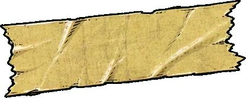
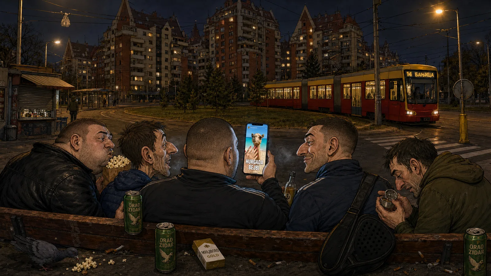

Sveže na ziduHronika jedne suše: sedam dana bez Žileta, ili kako je Banjica 2 ostala na suvom
Republički hidrometeorološki zavod je za poslednju nedelju oktobra prijavio uredne padavine, umerenu košavu i jutarnju maglu kod Pančevačkog mosta. Nijedan meteorolog, nijedan jutarnji program i nijedna push notifikacija nisu prijavili ono...